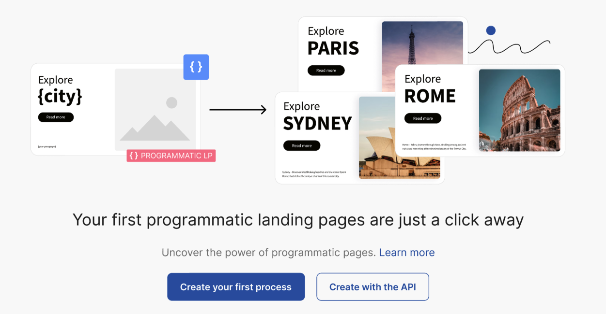
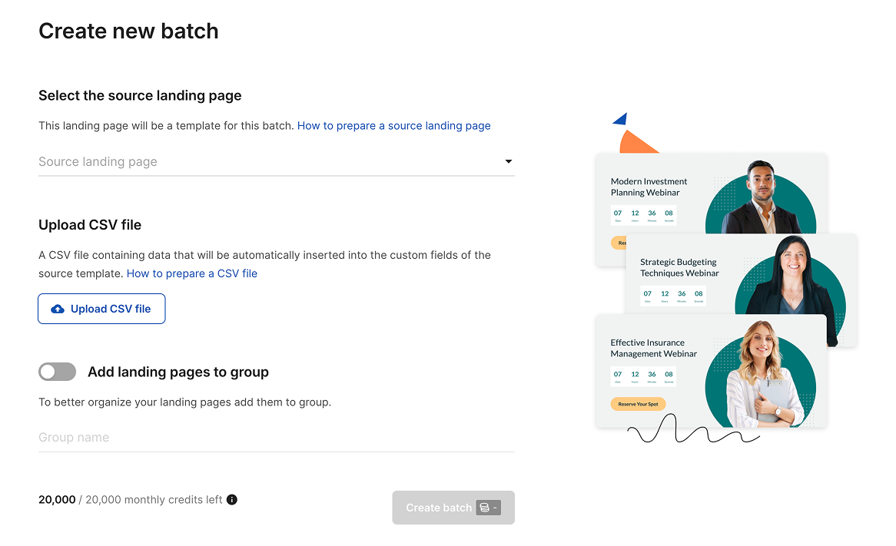
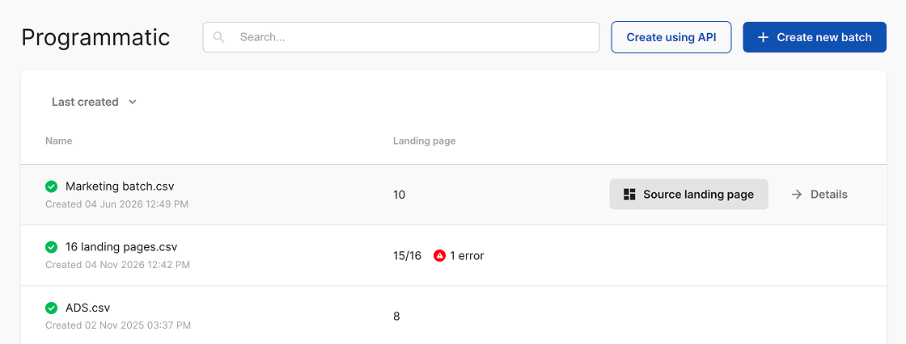

Problem
Creating many similar landing pages manually was too time-consuming. Users needed a way to generate pages from one template without duplicating, editing and publishing each page separately.
In short
A public Landingi feature that helps users generate multiple landing pages from one source template. I worked across the full product process: problem definition, UX/UI, copy, edge cases, developer alignment and pre-release testing. The result was a clear flow for starting, monitoring and managing bulk page generation.
Creating many similar landing pages manually was too time-consuming. Users needed a way to generate pages from one template without duplicating, editing and publishing each page separately.
A flow for starting and controlling bulk page generation: selecting the source page, adding data, starting the process, checking progress and handling errors.
I worked on problem definition, flow, UI, copy, states, edge cases, handoff, developer alignment and pre-release testing.
The feature was released publicly. After release, I reviewed usage signals, feedback and areas that needed clearer communication or further iteration.
Due to NDA and respect for the company, this case study covers only the public scope of the feature and my role. Internal details, metrics and implementation documentation are intentionally omitted.
Process
Defining the problem, key use cases and first release scope.
Designing the process logic, screens, messages, states and edge cases.
Handoff, developer consultations, implementation testing and pre-release fixes.
Role
Value
This project shows how I work on complex product features: I understand the problem, structure the process, design UI and communication, cover edge cases, collaborate with development and test the solution before it reaches users.
Screens

Empty state explaining the feature and guiding users to start their first process.

Create batch flow with source page selection, CSV upload and credits information.

Process list showing generated pages, statuses and access to details.